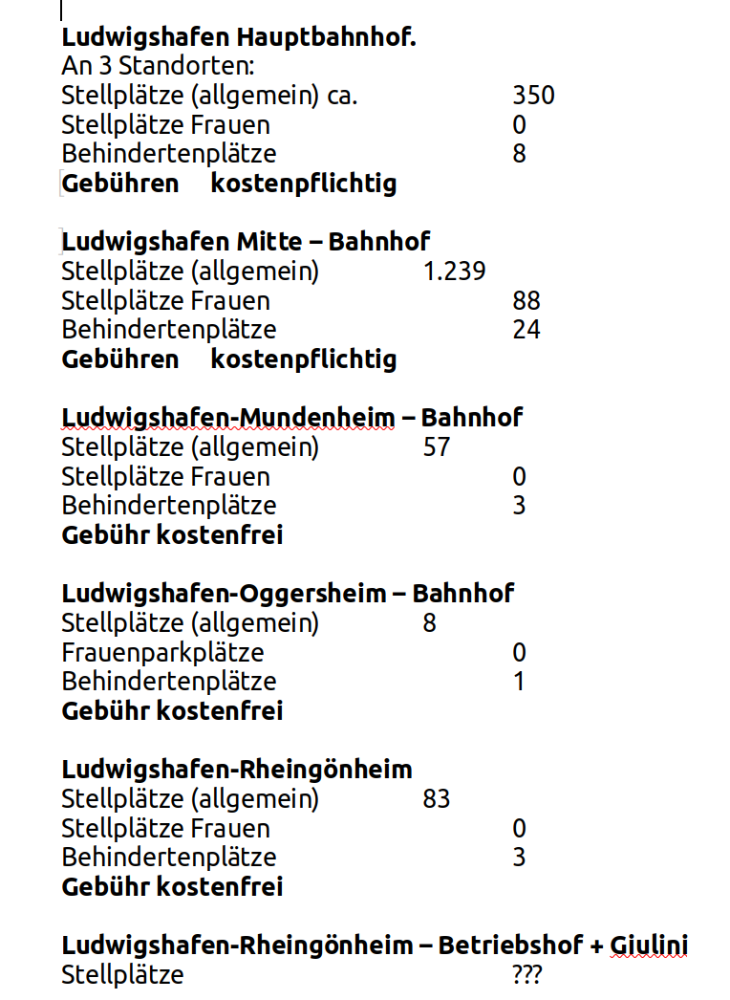

P a r k & R i d e (P&R) P a r k p l ä t z e i n LU
u m d e n A u t o v e r k e h r z u r e d u z i e r e n ?
Der Verkehrsverbund Rhein-Neckar (VRN) listet Parkplätze für Park-and-Ride für alle Bahnhöfe im Stadtgebiet Ludwigshafen auf. Diese haben in erster Linie den Zweck, den Reisenden der DB einen Parkplatz anzubieten. Vermutlich sind die Benutzer seltener oder nie daran interessiert, in die Innenstadt von Ludwigshafen zu reisen. Das lässt sich von dem Ort der Parkplätze ableiten: die genannten Parkplätze innerhalb von Ludwigshafen liegen unmittelbar an den Haltestellen der S-Bahn Linien Mannheim-Schifferstadt-Neustadt und Ludwigshafen-Frankenthal-Mainz.
Nachstehend, die Links zu den Park&Ride Webseiten der 5 Bahnhöfen in Ludwigshafen
- Park&Ride Ludwigshafen Hauptbahnof
- Park&Ride Ludwigshafen Mitte Bahnhof
- Park&Ride Ludwigshafen Mundenheim Bahnhof
- Park&Ride Ludwigshafen Oggersheim Bahnhof
- Park&Ride Ludwigshafen Rheingönheim Bahnhof

Vereinfachte Übersicht der Park&Ride Möglichkeiten in LU, Status Dezember 2023
Anm.: Der P&R-Parkplatz „Betriebshof – Giulini“ von der VRN-Webseite nicht aufgelistet. Seine Existenz wurde mir auf Nachfrage bei der Mobilitätszentrale der Rhein-Neckar Verkehrs GmbH (RNV) am Berliner Platz, Ludwigshafen, mündlich bestätigt.
Offensichtlich hat die DB, bzw. die S-Bahn als Mitglied des VRN die eigenen Hausaufgaben erledigt, und für ihre Kunden ein Angebot, teilweise ohne Zusatzkosten, für Parkplätze zum Park&Ride (P+R) geschaffen. Das ist natürlich vorrangig ein Angebot für die „Weiterreisenden“, und nicht in erster Linie für die in die Innenstadt von Ludwigshafen Reisenden. Die Interpretation ergibt sich aus dem Angebot am HBF und in Lu-Mitte. Gut ist das Allemal.
Das müsste doch ein Ansporn für die für Verkerhsbauten im Bereich der RNV zuständigen Stadt Ludwigshafen sein, ein vergleichbares P&R-Parkplatz-Angebot für ihre Kunden anzubieten, um den PKW-Verkehr in der Innenstadt zu reduzieren.
Welche Möglichkeiten würde es geben? Die Stadt Ludwigshafen könnte Parkplätze wie folgt anbieten. An Endhaltestellen von Straßenbahn-Linien:
- Linie 4 Oggersheim, Schleife
- Linie 6 Rheingönheim, Schleife
- Linie 7 Oppau, Schleife
- Linie 10 Friesenheim, Gabel, kein Platz vorhanden für einen PKW-Parkplatz, da er in der „Mitte“ von Friesenheim liegt.
- Linie 10 Ludwigshafen Süd, Schleife und Parkplätze beim alten Betriebshof. Ob dieser Ort für ein P+R geeignet ist, kann ich nicht entscheiden.
An Ausfahrten von umliegenden Schnellstraßen:
- Im Bereich der A6, Kreuz Ludwigshafen-Nord, B9 BASF-Tor 9,
- B9 Kreuz Frankenthal Mitte.
- Im Bereich B9 Kreuz Frankenthal-Studernheim, und Oggersheim Nord.
- Im Bereich Kreuz A650-B9 Oggersheimer Kreuz. B9/B38 Maudach.
- B9/B44 Rheingönheimer Kreuz evtl. nicht nötig, wenn an der Endstelle der Straßenbahn 6 eine Möglichkeit ausgebaut wird.
Welche Eigenschaften sollten die Parkplatzfunktionen beinhalten?
- Vom PKW zur nächsten Haltestelle sicher und trockenen Fußes zu gelangen - möglichst ohne Erhöhung der Versiegelungen.
- Bus-Linien müssen passend umgeleitet oder in der Mehrzahl·der Fälle neu eingerichtet werden, so dass dieser Parkplatz häufig und regelmäßig bedient wird.
- Überdachte Fahrrad Abstellplätze, mit Möglichkeiten zum Abschließen, zum Anschließen, zum Einschließen (in einen Käfig, Fach oder Box), sowohl für private Fahrräder, als auch für kommerzielle Anbieter, z.B. NextBike.
- Vergleichbares für E-Scooter und Tretroller, sowohl für private, als auch für die kommerziellen Anbieter.
- Die Überdachungen können mit Solarpaneelen ausgestattet werden, um PKWs, Pedelecs oder E-Scooter aufzuladen – gegen Bezahlung.
- Ein Tarif für diese Dienstleistung, evtl. gestaffelt für Abonnenten, etc.
- Aus Platzgründen sollten an ausgewählten Straßenbahn- und Bushaltestellen die Parkplätze ausschließlich für Fahrräder und Roller zur Verfügung gestellt werden.
- Die Stadt Mannheim hat vor Jahren, ob heute noch weiß ich nicht, im Angebot mit dem P+R zur Weihnachtszeit einen Bus am Paradeplatz aufgestellt, und darin Pakete der Kunden zwischengelagert. Ob das Angebot brauchbar ist, sollte überprüft werden.
- Eine Mitfahrer-Bank? Dazu gibt es Pro und Kontra-Argumente.
Meine Anregungen oben ersetzen keineswegs eine professionelle Verkehrsplanung. Alle Kommentare sind willkommen sowie Hinweise auf Fehler, mögliche Verbesserungen, Erweiterungen und Ergänzungen - einschließlich der berühmten "Verschlimmbesserungen", denn diese, obwohl sie evtl. nicht unverändert übernommen werden, führen doch zu einer Diskussion über den einen oder mehrere Aspekte, die von unterschiedlichen Blickwinkeln betrachtet werden. Das ergibt Alles ein besseres Endergebnis.
Werner Boschmann, 27. November 2023. Version 0.11